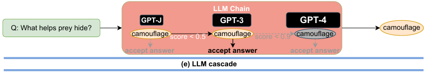
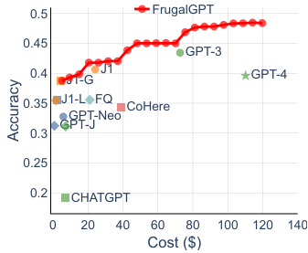

“FrugalGPT: How to Use Large Language Models While Reducing Cost and Improving Performance” from May 2023
https://arxiv.org/abs/2305.05176
Three strategies:
- Prompt adaptation (reduce few-shot examples or combine queries)
- LLM approximation (cache or fine-tuned smaller model)
- LLM cascade

FrugalGPT’s cost-performance profile not only allowed less expensive inference, but even achieved better performance than the largest model. Results for CoQA on reading comprehension:
